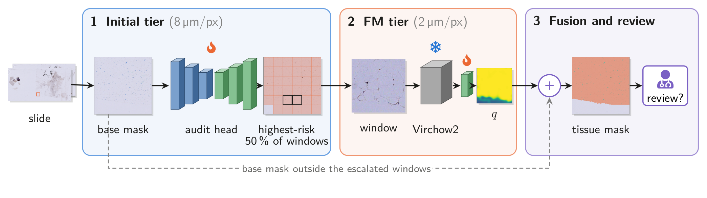
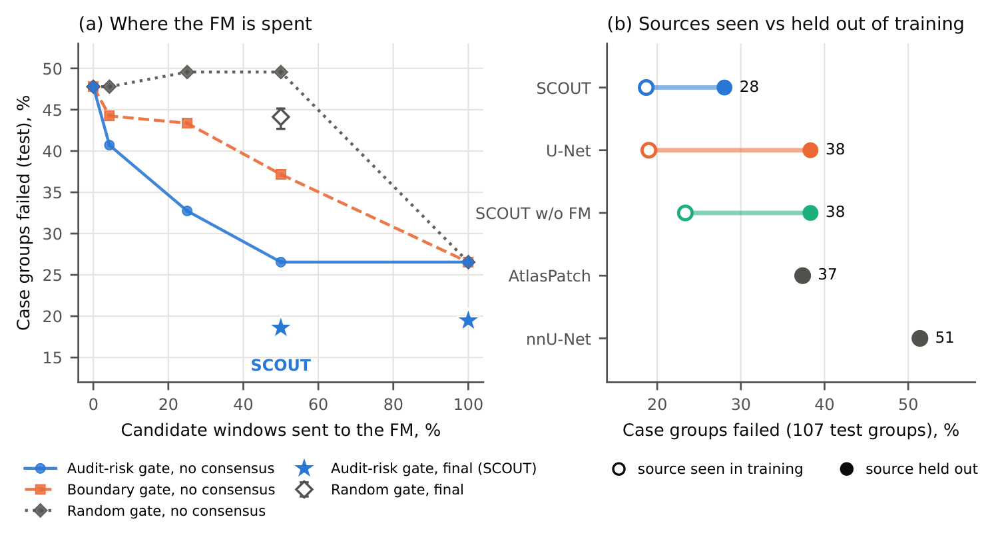
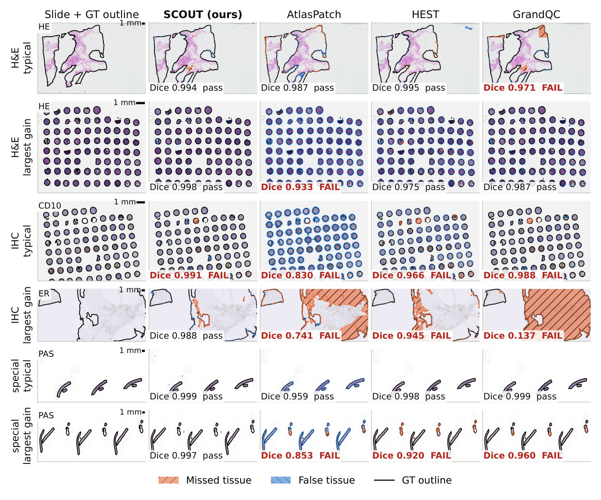

Department of Electrical Engineering and Information Technology (DIETI), University of Naples Federico II
Preprint, under review

Tissue detection is the first step of almost every whole-slide image pipeline, and it is usually treated as solved: released detectors reach a high mean overlap with manual masks. But a high mean Dice can coexist with a missed needle-biopsy fragment or a whole pale immunohistochemistry section left out, and those errors pass silently into every downstream model.
We measure detectors by how often a mask is wrong enough to need correction, on a public benchmark with manual masks from many sources and stains. Five released detectors fail on 38–95 % of the test case groups even after their post-processing is re-tuned on the benchmark, mostly by missing pale and immunohistochemistry tissue. SCOUT corrects these errors by running a pathology foundation model only where a cheap detector is likely to be wrong.
An optical-density threshold with morphology gives a mask of the whole slide at 8 µm/px in seconds.
A 1.4 M-parameter U-Net predicts, pixel by pixel, where that mask misses tissue or includes background.
The highest-risk half of the 448 µm windows near tissue is re-read at 2 µm/px and segmented by a frozen foundation model with a light decoder.
New tissue is added only where the foundation model is confident, so glass and debris stay out. A calibrated score flags slides for review.
The review flag is calibrated with Learn-then-Test to bound the rate of unflagged failures; it is calibrated for the Virchow2 variant of the paper and is not part of the released package.
Tissues with Issues test set: 113 case groups, 153 slides. A case group fails when the mask of one of its slides would need manual correction (more than 2 % of the tissue missed, a fragment of at least 0.1 mm² less than half detected, false tissue above 10 % of the tissue area, or precision below 0.9). Released detectors are evaluated after their post-processing is re-tuned on the development set.
| Method | Case groups failed | IHC case groups failed |
|---|---|---|
| SCOUT (Virchow2, paper) | 18.6 % | 22.0 % |
| SCOUT-open (H-optimus-0, released) | 19.5 % | – |
| AtlasPatch | 38.1 % | 60.0 % |
| HEST | 47.8 % | 56.0 % |
| nnU-Net (Helgesen et al.) | 50.4 % | 76.0 % |
| GrandQC | 53.1 % | 100.0 % |


The scout-tissue package runs SCOUT-open, built on the Apache-licensed H-optimus-0 (accept its terms on Hugging Face first). The weights download automatically. Masks come out on the slide's level-0 frame as NumPy, PNG or GeoJSON that QuPath imports directly.
Command line
# one or many slides; models load once pip install scout-tissue scout-tissue predict slide.svs --out masks/ \ --format npz,png,geojson # browser demo pip install "scout-tissue[demo]" scout-tissue demo --port 7860
Python
from scout_tissue import Scout scout = Scout.from_pretrained(device="cuda") res = scout.predict("slide.svs") res.mask # bool [H, W] at 8 µm/px res.tissue_area_mm2 res.to_geojson() # level-0 polygons res.save("masks/", ("npz", "geojson"))
About 6–89 s per slide on an NVIDIA RTX 5000 Ada (median ~41 s), with ~6 GB of GPU memory. Code Apache-2.0; SCOUT weights CC BY-NC 4.0; research use only.
@misc{tommasino2026scout,
title = {{SCOUT}: Risk-Guided Foundation-Model Escalation for Robust
Tissue Detection in Whole-Slide Images},
author = {Tommasino, Cristian and Rinaldi, Antonio M.},
year = {2026},
note = {Preprint, under review}
}